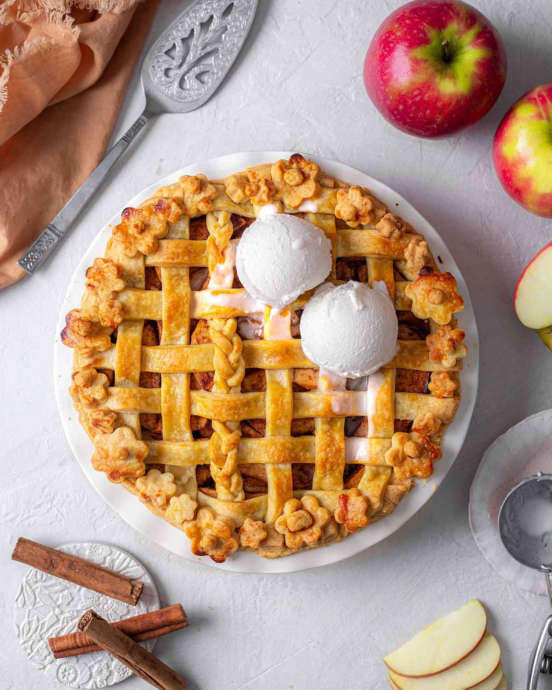

Apple pie

Description
This is a very good basic apple pie recipe.
As with any recipe, tweaking may be needed to suit your personal tastes, and reading the directions carefully is also mandatory.
Ingridients
- Dough for double-crust pie
- 1/3 cup sugar
- 1/3 cup packed brown sugar
- 1/4 cup all-purpose flour
- 1 teaspoon ground cinnamon
- 1/4 teaspoon ground ginger
- 1/4 teaspoon ground nutmeg
- 6 to 7 cups thinly sliced peeled tart apples
- 1 tablespoon lemon juice
- 1 tablespoon butter
- 1 large egg white
Steps
- Preheat oven to 375°. On a lightly floured surface, roll half of the dough to a 1/8-in.-thick circle; transfer to a 9-in. pie plate. In a small bowl, combine sugars, flour and spices. In a large bowl, toss apples with lemon juice. Add sugar mixture; toss to coat. Add filling; dot with butter.
- Roll remaining dough to a 1/8-in.-thick circle. Place over filling. Trim, seal and flute edge. Cut slits in top. Beat egg white until foamy; brush over crust. If desired, sprinkle with turbinado sugar and ground cinnamon. Cover edge loosely with foil.
- Bake 25 minutes. Remove foil; bake until crust is golden brown and filling is bubbly, 20-25 minutes longer. Cool on a wire rack. If desired, serve with ice cream and caramel sauce.